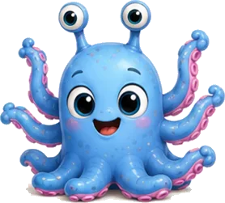
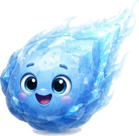

EarthThe Ocean Planet
From space, Earth is a beautiful blue world.
Clouds, oceans, land and ice are wrapped in a thin layer of air that helps keep us safe. Earth is the only world where life has been confirmed.


Tap a sparkling star on any page to meet a space friend and keep their sticker.
From space, Earth is a beautiful blue world.
Clouds, oceans, land and ice are wrapped in a thin layer of air that helps keep us safe. Earth is the only world where life has been confirmed.